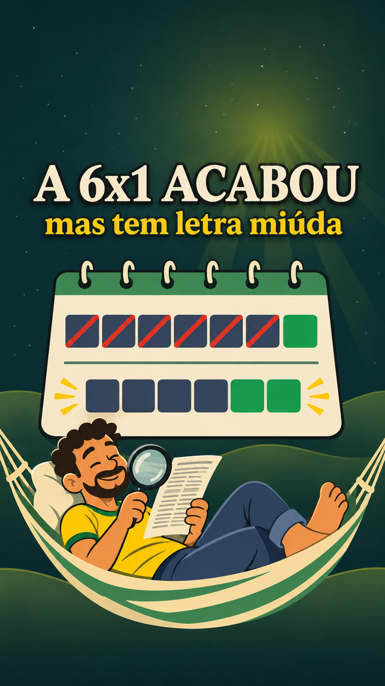

É assim que eu animo os vídeos do Fato Indigesto: a notícia vira um toon de fundo papel, com caricaturas, carimbo e tudo sincronizado com a narração — sem desenhar quadro a quadro e sem equipe. Aqui está o método inteiro e o prompt que eu colo pra IA montar.

O que levava uma equipe inteira de motion, você prototipa em minutos pedindo pra IA montar a animação. Não fica igual ao canal original — vira a sua versão, com a sua voz e o seu ritmo.
Na primeira vez, leia na ordem. Depois use como checklist. Cada passo tem o prompt pronto pra copiar.
A página acima ensina o método inteiro, de graça. O ebook é pra quem quer pular a parte chata e já sair montando: vem o pacote completo em PDF, com os arquivos prontos.
lib.js comentado + o fundo papel creme pronto